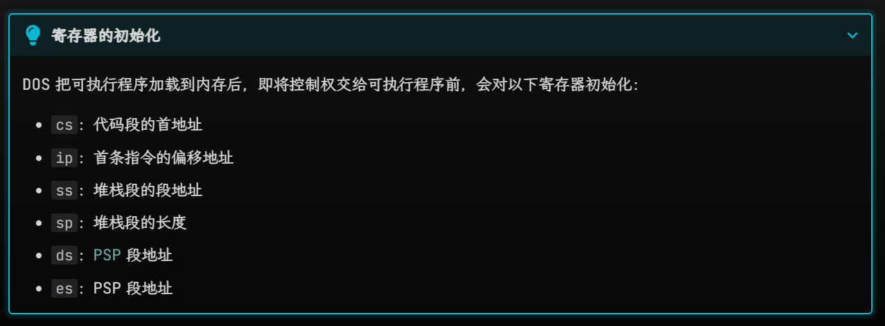
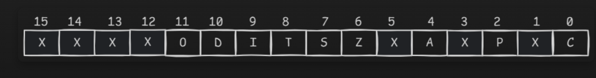
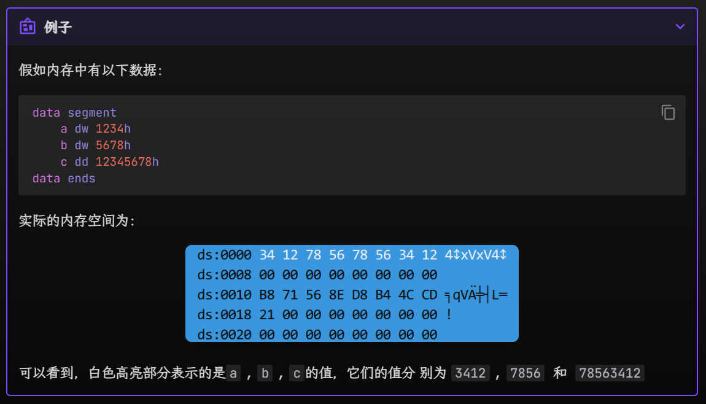

汇编复习提纲
约 1311 个字 24 行代码 3 张图片 预计阅读时间 5 分钟
考前补天的幻想
背完它，理论考拿下!!!
本章只是我自己的cheatsheet，但我基本啥也没背，所以仅限于有基础的前提下回顾知识点
一、数据组织
| 名称 | 英文 | 关键词（定义/ptr） | 内存大小 | 类型(对标C语言) |
|---|---|---|---|---|
| 字节 | byte | db/byte | 1字节，8位 | char |
| 字 | word | dw/word | 2字节，16位 | short int |
| 双字 | double word | dd/dword | 4字节，32位 | float,long |
| 四字 | quadruple word | dq/qword | 8字节，64位 | double,long long |
命名规则：
- 关键词：d+英文首字母
- ptr：
- 单个单词：本身
- 多个单词：第一个单词首字母+第二个单词本身
二、寄存器
2.1 通用寄存器（4数据+4变址+2指针）
1. 数据寄存器
ax: 累加器，常用于累加： - 特殊用法： - 乘除法： - 乘法:mul src: -src8位：ax = al*src-src16位：dx:ax = al*src- 除法：div op-op8位：ah = ax/op,al=ax%op-op16位：ax=(dx:ax)/op,dx=(dx:ax)%opbx: 基址寄存器：常用来存放寻址的基址cx: 计数寄存器，循环中用作计数器dx：数据寄存器：存放I/O端口地址 // 双子运算中，作为ax扩展的高十六位
2. 变址寄存器
- si -> source index 源变址寄存器
- di ->destination index 目的变址寄存器
注意！
- 只有四种寄存器：bx、si、di、bp是可以在[]内存在的
- 两两一组，只有四种组合：
- bx和si
- bx和di
- bp和si
- bp和di
3. 指针寄存器
bp: 只要在[]中使用bp, 但没有显性给出段地址，段地址默认在ss中，比如： -mov ax, [bp]即(ax)=((ss)*16+(bp))- 【其他的段地址默认在ds】sp：堆栈指针寄存器：ss:sp指向堆栈的顶端
2.2 段寄存器：
作用：表示段地址
- cs: 代码段寄存器，存放代码段的段地址
- 不能用mov赋值，只能用call/jmp/retf/int/iret指令间接改变值
- ds: 数据段寄存器，存放数据段的段地址【若没有特意指定，是默认的段地址】
- es: 附加段寄存器
- ss: 堆栈段寄存器
ds、es、ss可以用mov赋值，但源操作数只能是寄存器/变量（八个通用寄存器）
CPU 执行指令的流程 1. CPU 从
cs:ip指向的内存单元读取指令，该指令会进入指令缓冲器 2.ip = ip + length_of_instruction，即指向下一条指令 3. 执行指令，跳到步骤 a，重复这个过程" 4. 8086CPU 通电或复位后，cp = ffffh, ip = 0000h"
retf指令复习"back_ip = word ptr ss:[sp]; back_cs = word ptr ss:[sp+2]; sp += 4; if (idata16) sp += idata16; ip = back_ip; cs = back_cs;
2.3 偏移地址寄存器
作用：表示偏移地址（段地址：偏移地址）
ip-cs:ip, 不能直接出现在任何指令中 - 可以通过jmp reg跳转指令等控制转移指令来修改ip的内容
控制转移指令(回头再补)
sp-ss:sp指向堆栈顶端 - [!!]sp不是变址寄存器！不能用在[]里面！别记混了！！bx（通用寄存器）、bp、si、di- 能用[]间接寻址，也能参与算术、逻辑、移位运算

2.4 标志寄存器
作用：存储标志位
寄存器: fl，其内部结构如下：

| 指令名称 | abbr. | 适用范围 | 相关指令 | |
|---|---|---|---|---|
| 进位标志(carry flag) | cf |
仅对无符号数有意义 | cf->1: - 相加产生进位 - 相减产生借位 - 相乘超过 src大小- 移位指令最后移出的1位保存在 cf中 |
|
| 零标志(zero flag) | zf |
结果为0：zf=0 否则为1 |
||
| 符号标志(sign flag) | sf |
仅对符号数有意义 | 表示运算结果正负？运算结果+, sf=0 -，sf=1 |
|
| 溢出标志(overflow flag | of |
某些溢出情况->1: - 两个负数相加得正 - 两个正数相加得负 - 相乘后乘积宽度>被乘数宽度 - 仅移动1位后移动后最高位 !=移动前最高位 |
||
| 奇偶校验标志(parity flag) | pf |
当运算结果低 8 位中1的个数为偶数时，pf = 1，否则 pf = 0（偶校验） |
||
| 辅助进位标志(auxiliary flag) | af |
af=0->1 ① 加法时，第3位向第4位进位 ② 减法时，第4位向第3位借位 【和BCD码调整指令相关！】 |
||
| 方向标志(direction flag) | df |
当df=0时，字符串操作从低->高，每次操作后si,di递增当 df=1时，字符串操作从高->低，每次操作后si,di递减 |
cld: 使df=0 std: 使 df=1 |
|
| 中断标志(interrupt flag) | if |
if = 0：禁止硬件中断if = 1：允许硬件中断 |
cli（使 if = 0）sti（使 if = 1） |
|
| 陷阱标志(trap flag) | tf |
tf = 0：常规模式，连续执行指令tf = 1：单步模式，每执行一条指令后都会跟随执行int 01h中断指令，用于调试 |
移位指令：
shr&shl&sal&sar&rol&ror&rcl&rcr, c里的>>
BCD码调整指令/十进制码调整指令
和tf有关的指令：pushf,popf 这是样例程序：
; 令 tf = 1
pushf ; 将fl压入堆栈中
pop ax ; 从堆栈中弹出`fl`的值并保存到ax中
or ax, 100h ; 把ax的第8位置1
push ax
popf ; 从堆栈中弹出ax的值并保存到fl中，此时tf = 1
; 令 tf = 0
pushf
pop ax
and ax, 0FEFFh ; 把ax的第8位清零
push ax
popf ; 从堆栈中弹出ax的值并保存到fl中，此时tf = 0
结合pushf和popf指令，可以实现对标志寄存器的访问
pushf- 功能：把fl压入栈中 - 等价操作：sp-=2; word ptr ss:[sp]=fl;
popf
- 功能：从栈中弹出一个字给
fl - 等价操作：
fl = word ptr ss:[sp]; sp += 2;
- 格式：
popf
三、相关知识点
3.1 数据存放 — 小端规则
